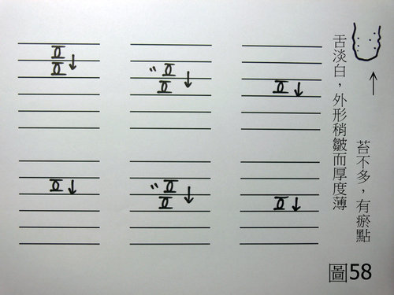

兵棋推演 2：貂蟬胸悶不舒服稍有咳嗽
作者：陳建元
〈圖58〉：
假設條件：貂蟬女20歲左右45公斤左右，主述是貂蟬自己也不知道怎麼回事，只是最近胸部悶悶的，有些乏力與短氣，稍有咳嗽，感到不舒服而已。

〈以下用科中，一日五次。即早餐後服用一次，中餐後服用一次，下午再服用一次，晚餐後服用一次，睡前再服用一次。〉
桂枝 2 防風 2 生薑 1 大棗 1
炙甘草 1 黃耆 1 知母 1 熟地 1
淫羊藿 1 當歸 1
〈依上述比例混合之後，每次服用5克，一日五次。〉
【思路探索】：
1. 貂蟬的主述是她自己也不知道這是怎麼回事，胸部悶悶的，有些乏力與短氣，稍有咳嗽，感到不舒服而已，事實上，單由這些外候，很難明確的判斷是什麼樣的病候，但是由脈象上的證據來看的話，雖然諸脈都是虛而無力的脈象，但是肺脈浮起來是較明顯的，又因為這是最近才發生的事情，所以也可排除掉肺氣虛的內傷病候，而知道貂蟬最近的胸部悶悶的、乏力與短氣、稍有咳嗽而不舒服的病因，是來自於最近肺系有感冒的緣故，只是這個虛性感冒較輕，外候不明顯而已。
2. 外候的表現並不劇烈，算是虛性表現的外候（即外候是虛證），脈象上則諸脈皆虛，又看其舌態，是素體氣血兩虛夾瘀的體質，所以整合起來看的話，是素體氣血兩虛的人罹患輕症的感冒，也即所謂的「虛體感冒」的意思，宜用仲景所倡桂枝湯方義補大於攻的概念來思考。
3. 既然肺脈浮而偏虛，則不宜過度發散，宜選用較不猛烈的藥物來發散，故用桂枝發散肺系的風寒；生薑、防風佐助桂枝來發散；生薑、大棗、炙甘草、黃耆、熟地、淫羊藿、當歸補益諸脈的氣血不足，其中黃耆又可佐助推邪外出，當歸又可活血；稍佐知母防其因為體虛，感冒逗留而容易化燥。
4. 虛性感冒的矛盾點在於體虛，所以總補藥的份量，要大於總攻藥的份量，也即要：
桂枝 2＋防風 2＋生薑 1＝5 ＜ 大棗 1＋炙甘草 1＋黃耆 1＋熟地 1＋淫羊藿 1＋當歸 1＝6
如果改成：
麻黃 4＋防風 4＋生薑 2＝10 ＞ 大棗 1＋炙甘草 1＋黃耆 1＋熟地 1＋淫羊藿 1＋當歸 1＝6
則這樣整帖藥就變成偏向攻藥了，虛上加虛，病情必然會加重，所以使用中藥的時候，藥味絕對不是有就算數了，只要比例不正確，加重病情甚至殺人只在舉手之間，學習中醫不得不謹慎。
5. 本兵棋推演宜和兵棋推演 1：楊過外感拖延 互相參看，兵棋推演 1：楊過外感拖延是「實性感冒」的起手法門與概念；兵棋推演 2：貂蟬胸悶不舒服稍有咳嗽是「虛性感冒」的起手法門與概念，一實一虛，也即《傷寒論》中「麻黃湯」、「桂枝湯」兩大法門的概念。
【引用請先來信告知徵求同意，若有涉及販售營利等商業行為，版權所有拷貝盜用必究。】
【藥王脈學講壇】http://blog.xuite.net/drjychen/twblog